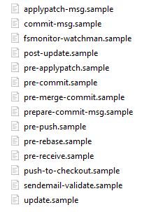

Linting
An important tool for increasing code readability is using linters and formatters.
Linters & formatters
A formatter can restructure your code without changing the behaviour of the code. Having a consistent formatting (like identation, brackets, spaces between operators) will make it easier to read and understand the code.
A linter can check both stylistic and logical rules. It can suggest fixes for many issues like:
- Import sorting
- Unused variables and imports
- Code complexity
- Type checking
- Naming conventions
- And much more
In this python project I use Ruff. This is a very fast rust-based linter is based on a collection of other linters/formatters, such as black, flake8, isort, pycodestyle and mccabe. All the rules of Ruff are documented here.
Most linters are configurable and you can chose which rules to lint, what identation to use, which files to lint and much more. I used the following settings for this python project.
[tool.ruff]
exclude = [
".git",
".pytest_cache",
".ruff_cache",
".venv",
".vscode",
"venv",
"infra",
]
line-length = 120
indent-width = 4
[tool.ruff.lint]
select = ["ALL"]
ignore = ["ANN101", "D100", "D101", "D104"]
ignore-init-module-imports = true
[tool.ruff.lint.per-file-ignores]
"tests/*" = ["S101"]
[tool.ruff.lint.pydocstyle]
convention = "google"
[tool.ruff.lint.mccabe]
max-complexity = 10
Pre-commit hook
You can run your linter from console, for example for ruff you can run ruff check . --fix. In most IDE's it is possible to active format on save. This is not advised, because you will have to wait on the code being reformatted every time you save, and code jump to a different spot.
The best way is linting just before committing to git. This can be automated by using the pre-commit hook. Git provides the following hooks:

It is possible to install scripts to these hooks, which will be executed when doing the corresponding action. The pre-commit hook, as the name suggests, will run before committing, which is a good moment to lint your code.
In this python setup I installed pip install pre-commit. I created a .pre-commit-config.yaml, which contains 2 scripts:
- a script that executes Ruff.
- a script that lints the yaml files. You can easily use predefined script or write your own ones (documentation).
This allows the user to run all the configured pre-commit steps by running the command pre-commit run --all-files.
Linting in CI/CD
Besides linting locally, it is also important to lint before completing Pull/Merge Requests. This can easily be done by adding a linting step in your CI/CD pipelines.
For GitLab you can add the following to .gitlab-ci.yml:
stages:
- test
lint_package:
stage: test
script:
- pip install --upgrade ruff
- python -m ruff check .